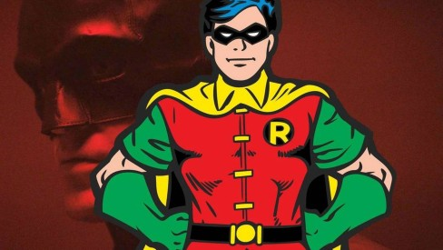
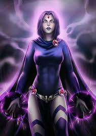
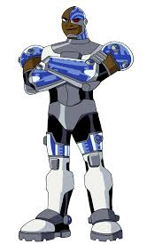

Estelar
Vinda do planeta Tamaran, Estelar possui habilidades de voo, manipulação de energia e força sobre-humana. Ela também é muito otimista.

O líder dos Jovens Titãs, um mestre em combate corpo a corpo e estratégia. Robin é corajoso e sempre busca fazer o que é certo.
Ravena é uma jovem com habilidades místicas, podendo controlar suas emoções e a matéria ao seu redor. Sua força vem de sua mente.
Metade humano, metade máquina, Ciborgue é um gênio da tecnologia e possui força e habilidades sobre-humanas.
Vinda do planeta Tamaran, Estelar possui habilidades de voo, manipulação de energia e força sobre-humana. Ela também é muito otimista.
Mutano tem a habilidade de se transformar em qualquer animal, desde um elefante até uma mosca. Ele é o mais brincalhão do grupo.